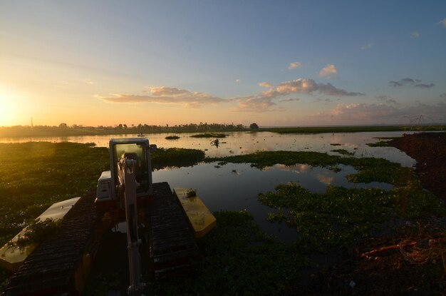

1. amazonia

- Biodiversidad: La Amazonía peruana cuenta con una increíble variedad de plantas, animales, y ecosistemas, muchos de ellos aún poco explorados por la ciencia.
- Ríos y paisajes: El río Amazonas, el más caudaloso del mundo, nace en los Andes peruanos y atraviesa esta región, creando paisajes espectaculares y oportunidades para actividades turísticas como la navegación, pesca deportiva y observación de aves.
- Culturas indígenas: La región está habitada por numerosas comunidades indígenas que conservan tradiciones ancestrales, lenguas originarias y un profundo respeto por la naturaleza.
es una de las regiones más biodiversas y ricas en recursos naturales del planeta. Esta vasta selva tropical cubre aproximadamente el 60% del territorio nacional y alberga miles de especies de flora y fauna únicas en el mundo.
2. Destinos turísticos destacados:
- Reserva Nacional Pacaya Samiria: Un impresionante santuario natural donde se pueden observar delfines rosados, monos y una gran variedad de aves.
- Parque Nacional Manu: Declarado Patrimonio Mundial por la UNESCO, es un punto clave para la conservación y exploración científica.
- Iquitos: La puerta de entrada a la Amazonía, conocida por su cultura única y la oportunidad de experimentar la selva desde la ciudad más grande en la selva amazónica.
3. Extensión de la Amazonía en el Perú

- La Amazonía peruana está formada por una mezcla de ríos, selvas, lagunas y humedales.
- La altitud varía desde zonas bajas cerca del nivel del mar hasta áreas más elevadas en la frontera con la sierra andina
- Es la cuenca del río Amazonas, el río más caudaloso del planeta, que nace en las montañas de los Andes peruanos y recorre la selva hacia el Atlántico.
La Amazonía peruana es una de las regiones más grandes y biodiversas del país, cubriendo aproximadamente el 60% del territorio nacional. Su superficie se extiende por más de 780,000 kilómetros cuadrados, lo que la convierte en una de las áreas de selva tropical más grandes del mundo.
4. Importancia Ambiental de la Amazonía en el Perú

- La Amazonía es una fuente invaluable de recursos genéticos que pueden ser usados en medicina, agricultura y biotecnología para resolver problemas actuales y futuros.
- Muchas comunidades indígenas dependen del bosque para su alimentación, vivienda y cultura, y su conservación es crucial para preservar estos modos de vida ancestrales.
- Esta región alberga una de las mayores biodiversidades del planeta, con miles de especies de plantas, animales, hongos y microorganismos que contribuyen a mantener saludables los ecosistemas.